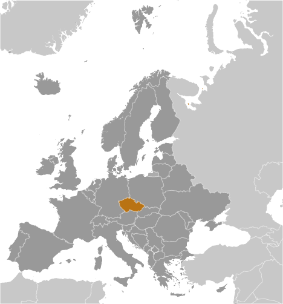
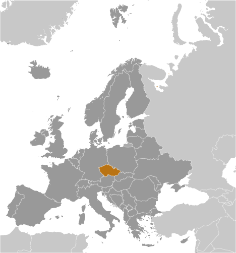

-
Introduction :: Czechia
-
Background:At the close of World War I, the Czechs and Slovaks of the former Austro-Hungarian Empire merged to form Czechoslovakia. During the interwar years, having rejected a federal system, the new country's predominantly Czech leaders were frequently preoccupied with meeting the increasingly strident demands of other ethnic minorities within the republic, most notably the Slovaks, the Sudeten Germans, and the Ruthenians (Ukrainians). On the eve of World War II, Nazi Germany occupied the territory that today comprises Czechia, and Slovakia became an independent state allied with Germany. After the war, a reunited but truncated Czechoslovakia (less Ruthenia) fell within the Soviet sphere of influence. In 1968, an invasion by Warsaw Pact troops ended the efforts of the country's leaders to liberalize communist rule and create "socialism with a human face," ushering in a period of repression known as "normalization." The peaceful "Velvet Revolution" swept the Communist Party from power at the end of 1989 and inaugurated a return to democratic rule and a market economy. On 1 January 1993, the country underwent a nonviolent "velvet divorce" into its two national components, the Czech Republic and Slovakia. The Czech Republic joined NATO in 1999 and the European Union in 2004. The country added the short-form name Czechia in 2016, while continuing to use the full form name, Czech Republic.
-
Geography :: Czechia
-
Location:Central Europe, between Germany, Poland, Slovakia, and AustriaGeographic coordinates:49 45 N, 15 30 EMap references:EuropeArea:total: 78,867 sq kmland: 77,247 sq kmwater: 1,620 sq kmcountry comparison to the world: 117Area - comparative:about two-thirds the size of Pennsylvania; slightly smaller than South CarolinaLand boundaries:total: 2,143 kmborder countries (4): Austria 402 km, Germany 704 km, Poland 796 km, Slovakia 241 kmCoastline:0 km (landlocked)Maritime claims:none (landlocked)Climate:temperate; cool summers; cold, cloudy, humid wintersTerrain:Bohemia in the west consists of rolling plains, hills, and plateaus surrounded by low mountains; Moravia in the east consists of very hilly countryElevation:mean elevation: 433 melevation extremes: 115 m lowest point: Labe (Elbe) River1602 highest point: SnezkaNatural resources:hard coal, soft coal, kaolin, clay, graphite, timber, arable landLand use:agricultural land: 54.8% (2011 est.)arable land: 41% (2011 est.) / permanent crops: 1% (2011 est.) / permanent pasture: 12.8% (2011 est.)forest: 34.4% (2011 est.)other: 10.8% (2011 est.)Irrigated land:320 sq km (2012)Population distribution:a fairly even distribution throughout most of the country, but the northern and eastern regions tend to have larger urban concentrationsNatural hazards:floodingEnvironment - current issues:air and water pollution in areas of northwest Bohemia and in northern Moravia around Ostrava present health risks; acid rain damaging forests; land pollution caused by industry, mining, and agricultureEnvironment - international agreements:party to: Air Pollution, Air Pollution-Nitrogen Oxides, Air Pollution-Persistent Organic Pollutants, Air Pollution-Sulfur 85, Air Pollution-Sulfur 94, Air Pollution-Volatile Organic Compounds, Antarctic-Environmental Protocol, Antarctic Treaty, Biodiversity, Climate Change, Climate Change-Kyoto Protocol, Desertification, Endangered Species, Environmental Modification, Hazardous Wastes, Law of the Sea, Ozone Layer Protection, Ship Pollution, Wetlands, Whalingsigned, but not ratified: none of the selected agreementsGeography - note:landlocked; strategically located astride some of oldest and most significant land routes in Europe; Moravian Gate is a traditional military corridor between the North European Plain and the Danube in central Europe
-
People and Society :: Czechia
-
Population:10,686,269 (July 2018 est.)country comparison to the world: 85Nationality:noun: Czech(s)adjective: CzechEthnic groups:Czech 64.3%, Moravian 5%, Slovak 1.4%, other 1.8%, unspecified 27.5% (2011 est.)Languages:Czech (official) 95.4%, Slovak 1.6%, other 3% (2011 census)Religions:Roman Catholic 10.4%, Protestant (includes Czech Brethren and Hussite) 1.1%, other and unspecified 54%, none 34.5% (2011 est.)Age structure:0-14 years: 15.21% (male 834,800 /female 790,128)15-24 years: 9.34% (male 514,728 /female 483,546)25-54 years: 43.79% (male 2,404,724 /female 2,275,309)55-64 years: 12.24% (male 638,130 /female 669,959)65 years and over: 19.42% (male 865,455 /female 1,209,490) (2018 est.)population pyramid:
 The World Factbook Field Image ModalEurope :: Czechia Print
The World Factbook Field Image ModalEurope :: Czechia Print Image DescriptionThis is the population pyramid for Czechia. A population pyramid illustrates the age and sex structure of a country's population and may provide insights about political and social stability, as well as economic development. The population is distributed along the horizontal axis, with males shown on the left and females on the right. The male and female populations are broken down into 5-year age groups represented as horizontal bars along the vertical axis, with the youngest age groups at the bottom and the oldest at the top. The shape of the population pyramid gradually evolves over time based on fertility, mortality, and international migration trends.
Image DescriptionThis is the population pyramid for Czechia. A population pyramid illustrates the age and sex structure of a country's population and may provide insights about political and social stability, as well as economic development. The population is distributed along the horizontal axis, with males shown on the left and females on the right. The male and female populations are broken down into 5-year age groups represented as horizontal bars along the vertical axis, with the youngest age groups at the bottom and the oldest at the top. The shape of the population pyramid gradually evolves over time based on fertility, mortality, and international migration trends.
For additional information, please see the entry for Population pyramid on the Definitions and Notes page under the References tab.Dependency ratios:total dependency ratio: 49.5 (2015 est.)youth dependency ratio: 22.6 (2015 est.)elderly dependency ratio: 26.9 (2015 est.)potential support ratio: 3.7 (2015 est.)Median age:total: 42.5 yearsmale: 41.2 yearsfemale: 43.8 years (2018 est.)country comparison to the world: 29Population growth rate:0.1% (2018 est.)country comparison to the world: 186Birth rate:9.2 births/1,000 population (2018 est.)country comparison to the world: 203Death rate:10.5 deaths/1,000 population (2018 est.)country comparison to the world: 27Net migration rate:2.3 migrant(s)/1,000 population (2017 est.)country comparison to the world: 40Population distribution:a fairly even distribution throughout most of the country, but the northern and eastern regions tend to have larger urban concentrationsUrbanization:urban population: 73.8% of total population (2018)rate of urbanization: 0.21% annual rate of change (2015-20 est.)Major urban areas - population:1.292 million PRAGUE (capital) (2018)Sex ratio:at birth: 1.06 male(s)/female (2017 est.)0-14 years: 1.06 male(s)/female (2017 est.)15-24 years: 1.06 male(s)/female (2017 est.)25-54 years: 1.05 male(s)/female (2017 est.)55-64 years: 0.94 male(s)/female (2017 est.)65 years and over: 0.7 male(s)/female (2017 est.)total population: 0.97 male(s)/female (2017 est.)Mother's mean age at first birth:28.1 years (2014 est.)Maternal mortality rate:4 deaths/100,000 live births (2015 est.)country comparison to the world: 177Infant mortality rate:total: 2.6 deaths/1,000 live births (2018 est.)male: 2.8 deaths/1,000 live births (2018 est.)female: 2.5 deaths/1,000 live births (2018 est.)country comparison to the world: 214Life expectancy at birth:total population: 78.9 years (2018 est.)male: 76 years (2018 est.)female: 82.1 years (2018 est.)country comparison to the world: 57Total fertility rate:1.46 children born/woman (2018 est.)country comparison to the world: 203Contraceptive prevalence rate:86.3% (2008)note: percent of women aged 18-44
Health expenditures:7.4% of GDP (2014)country comparison to the world: 69Physicians density:3.68 physicians/1,000 population (2013)Hospital bed density:6.5 beds/1,000 population (2015)Drinking water source:improved: urban: 100% of populationrural: 100% of populationtotal: 100% of populationunimproved: urban: 0% of populationrural: 0% of populationtotal: 0% of population (2015 est.)Sanitation facility access:improved: urban: 99.1% of population (2015 est.)rural: 99.2% of population (2015 est.)total: 99.1% of population (2015 est.)unimproved: urban: 0.9% of population (2015 est.)rural: 0.8% of population (2015 est.)total: 0.9% of population (2015 est.)HIV/AIDS - adult prevalence rate:<.1% (2017 est.)HIV/AIDS - people living with HIV/AIDS:2,900 (2017 est.)country comparison to the world: 123HIV/AIDS - deaths:<100 (2017 est.)Obesity - adult prevalence rate:26% (2016)country comparison to the world: 46Education expenditures:4% of GDP (2014)country comparison to the world: 110Literacy:definition: NA (2011 est.)total population: 99% (2011 est.)male: 99% (2011 est.)female: 99% (2011 est.)School life expectancy (primary to tertiary education):total: 17 years (2014)male: 16 years (2014)female: 18 years (2014)Unemployment, youth ages 15-24:total: 10.5% (2016 est.)male: 9.9% (2016 est.)female: 11.4% (2016 est.)country comparison to the world: 122 -
Government :: Czechia
-
Country name:conventional long form: Czech Republicconventional short form: Czechialocal long form: Ceska republikalocal short form: Ceskoetymology: name derives from the Czechs, a West Slavic tribe who rose to prominence in the late 9th century A.D.Government type:parliamentary republicCapital:name: Praguegeographic coordinates: 50 05 N, 14 28 Etime difference: UTC+1 (6 hours ahead of Washington, DC, during Standard Time)daylight saving time: +1hr, begins last Sunday in March; ends last Sunday in OctoberAdministrative divisions:13 regions (kraje, singular - kraj) and 1 capital city* (hlavni mesto); Jihocesky (South Bohemia), Jihomoravsky (South Moravia), Karlovarsky (Karlovy Vary), Kralovehradecky (Hradec Kralove), Liberecky (Liberec), Moravskoslezsky (Moravia-Silesia), Olomoucky (Olomouc), Pardubicky (Pardubice), Plzensky (Pilsen), Praha (Prague)*, Stredocesky (Central Bohemia), Ustecky (Usti), Vysocina (Highlands), Zlinsky (Zlin)Independence:1 January 1993 (Czechoslovakia split into the Czech Republic and Slovakia); note - although 1 January is the day the Czech Republic came into being, the Czechs commemorate 28 October 1918, the day the former Czechoslovakia declared its independence from the Austro-Hungarian Empire, as their independence dayNational holiday:Czechoslovak Founding Day, 28 October (1918)Constitution:history: previous 1960; latest ratified 16 December 1992, effective 1 January 1993 (2017)amendments: passage requires at least three-fifths concurrence by members present in both houses of Parliament; amended several times, last in 2013 (2017)Legal system:new civil code enacted in 2014, replacing civil code of 1964 - based on former Austro-Hungarian civil codes and socialist theory - and reintroducing former Czech legal terminologyInternational law organization participation:has not submitted an ICJ jurisdiction declaration; accepts ICCt jurisdictionCitizenship:citizenship by birth: nocitizenship by descent only: at least one parent must be a citizen of Czechiadual citizenship recognized: noresidency requirement for naturalization: 5 yearsSuffrage:18 years of age; universalJudicial branch:highest courts: Supreme Court (organized into Civil Law and Commercial Division, and Criminal Division each with a court chief justice, vice justice, and several judges); Constitutional Court (consists of 15 justices); Supreme Administrative Court (consists of 28 judges)judge selection and term of office: Supreme Court judges proposed by the Chamber of Deputies and appointed by the president; judges appointed for life; Constitutional Court judges appointed by the president and confirmed by the Senate; judges appointed for 10-year, renewable terms; Supreme Administrative Court judges selected by the president of the Court; unlimited termssubordinate courts: High Court; regional and district courtsExecutive branch:chief of state: President Milos ZEMAN (since 8 March 2013)head of government: Prime Minister Andrej BABIS (since 13 December 2017); First Deputy Prime Minister Jan HAMACEK (since 27 June 2018), Deputy Prime Minister Richard BRABEC (since 13 December 2017); note - the current government of Prime Minister Andrej BABIS was sworn in on 13 December 2017 but lost a confidence vote on 16 January 2018 and resigned the next day; President Milos ZEMAN accepted the resignation on 24 January 2018; the government is currently ruling in resignationcabinet: Cabinet appointed by the president on the recommendation of the prime ministerelections/appointments: president directly elected by absolute majority popular vote in 2 rounds if needed for a 5-year term (limited to 2 consecutive terms); elections last held on 12-13 January 2018 with a runoff on 26-27 January 2018 (next to be held in January 2023); prime minister appointed by the president for a 4-year termelection results: Milos ZEMAN reelected president in the second round; percent of vote - Milos ZEMAN (SPO) 51.4%, Jiri DRAHOS (independent) 48.6%Legislative branch:description: bicameral Parliament or Parlament consists of:
Senate or Senat (81 seats; members directly elected in single-seat constituencies by absolute majority vote in 2 rounds if needed; members serve 6-year terms with one-third of the membership renewed every 2 years)
Chamber of Deputies or Poslanecka Snemovna (200 seats; members directly elected in 14 multi-seat constituencies by proportional representation vote with a 5% threshold required to fill a seat; members serve 4-year terms)elections:
Senate - last held in 2 rounds on 5-6 and 12-13 October 2018 (next to be held in October 2020)
Chamber of Deputies - last held on 20-21 October 2017 (next to be held by October 2021)election results:
Senate - percent of vote by party - NA; ODS 16, KDU-CSL 16, CSSD 13, STAN 10, ANO 7, SEN 21 6, TOP 09 3, SZ 1, Movement for Prague 1, Pirates 1, SsCR 1, independent 6; composition NA
Chamber of Deputies - percent of vote by party - ANO 29.6%, ODS 11.3%, Pirates 10.8%, SPD 10.6%, KSCM 7.8%, CSSD 7.3%, KDU-CSL 5.8%, TOP 09 5.3%, STAN 5.2%, other 6.3%; seats by party - ANO 78, ODS 25, Pirates 22, SPD 22, CSSD 15, KSCM 15, KDU-CSL 10, TOP 09 7, STAN 6; composition - men 156, women 44, percent of women 22%; note - total Parliament percent of women NAPolitical parties and leaders:Christian Democratic Union-Czechoslovak People's Party or KDU-CSL [Pavel BELOBRADEK]
Civic Democratic Party or ODS [Petr FIALA]
Communist Party of Bohemia and Moravia or KSCM [Vojtech FILIP]
Czech Social Democratic Party or CSSD [Jan HAMACEK]
Dawn - National Coalition or Usvit-NK [Miroslav LIDINSKY]
Free Citizens Party or Svobodni [Petr MACH]
Freedom and Direct Democracy or SPD [Tomio OKAMURA]
Green Party or SZ [Petr STEPANEK]
Mayors and Independents or STAN [Petr GAZDIK]
Mayors for the Liberec Region or SLK [Martin PUTA]
Movement for Prague
Movement of Dissatisfied Citizens or ANO [Andrej BABIS]
Nestranici (Non-Partisans) or NK [Vera RYBOVA]
North Bohemians or S.cz [Bronislav SCHWARZ]
Party of Civic Rights or SPO [Lubomir NECAS]
Pirate Party or Pirates [Ivan BARTOS]
Tradition Responsibility Prosperity 09 or TOP 09 [Jiri POSPISIL]International organization participation:Australia Group, BIS, BSEC (observer), CD, CE, CEI, CERN, EAPC, EBRD, ECB, EIB, ESA, EU, FAO, IAEA, IBRD, ICAO, ICC (national committees), ICCt, ICRM, IDA, IEA, IFC, IFRCS, ILO, IMF, IMO, IMSO, Interpol, IOC, IOM, IPU, ISO, ITSO, ITU, ITUC (NGOs), MIGA, MONUSCO, NATO, NEA, NSG, OAS (observer), OECD, OIF (observer), OPCW, OSCE, PCA, Schengen Convention, SELEC, UN, UNCTAD, UNESCO, UNHCR, UNIDO, UNWTO, UPU, WCO, WFTU (NGOs), WHO, WIPO, WMO, WTO, ZCDiplomatic representation in the US:chief of mission: Ambassador Hynek KMONICEK (since 24 April 2017)chancery: 3900 Spring of Freedom Street NW, Washington, DC 20008telephone: [1] (202) 274-9100FAX: [1] (202) 966-8540consulate(s) general: Chicago, Los Angeles, New YorkDiplomatic representation from the US:chief of mission: Ambassador Stephen B. KING (since 6 December 2017)embassy: Trziste 15, 118 01 Prague 1 - Mala Stranamailing address: use embassy street addresstelephone: [420] 257 022 000FAX: [420] 257 022 809Flag description:two equal horizontal bands of white (top) and red with a blue isosceles triangle based on the hoist sidenote: combines the white and red colors of Bohemia with blue from the arms of Moravia; is identical to the flag of the former Czechoslovakia
National symbol(s):silver (or white), double-tailed, rampant lion; national colors: white, red, blueNational anthem:name: "Kde domov muj?" (Where is My Home?)lyrics/music: Josef Kajetan TYL/Frantisek Jan SKROUPnote: adopted 1993; the anthem was originally written as incidental music to the play "Fidlovacka" (1834), it soon became very popular as an unofficial anthem of the Czech nation; its first verse served as the official Czechoslovak anthem beginning in 1918, while the second verse (Slovak) was dropped after the split of Czechoslovakia in 1993
-
Economy :: Czechia
-
Economy - overview:
Czechia is a prosperous market economy that boasts one of the highest GDP growth rates and lowest unemployment levels in the EU, but its dependence on exports makes economic growth vulnerable to contractions in external demand. Czechia’s exports comprise some 80% of GDP and largely consist of automobiles, the country’s single largest industry. Czechia acceded to the EU in 2004 but has yet to join the euro-zone. While the flexible koruna helps Czechia weather external shocks, it was one of the world’s strongest performing currencies in 2017, appreciating approximately 16% relative to the US dollar after the central bank (Czech National Bank - CNB) ended its cap on the currency’s value in early April 2017, which it had maintained since November 2013. The CNB hiked rates in August and November 2017 - the first rate changes in nine years - to address rising inflationary pressures brought by strong economic growth and a tight labor market.
Since coming to power in 2014, the new government has undertaken some reforms to try to reduce corruption, attract investment, and improve social welfare programs, which could help increase the government’s revenues and improve living conditions for Czechs. The government introduced in December 2016 an online tax reporting system intended to reduce tax evasion and increase revenues. The government also plans to remove labor market rigidities to improve the business climate, bring procurement procedures in line with EU best practices, and boost wages. The country's low unemployment rate has led to steady increases in salaries, and the government is facing pressure from businesses to allow greater migration of qualified workers, at least from Ukraine and neighboring Central European countries.
Long-term challenges include dealing with a rapidly aging population, a shortage of skilled workers, a lagging education system, funding an unsustainable pension and health care system, and diversifying away from manufacturing and toward a more high-tech, services-based, knowledge economy.
GDP (purchasing power parity):$375.9 billion (2017 est.)$360.5 billion (2016 est.)$351.9 billion (2015 est.)note: data are in 2017 dollars
country comparison to the world: 49GDP (official exchange rate):$215.8 billion (2017 est.) (2017 est.)GDP - real growth rate:4.3% (2017 est.)2.5% (2016 est.)5.3% (2015 est.)country comparison to the world: 68GDP - per capita (PPP):$35,500 (2017 est.)$34,200 (2016 est.)$33,400 (2015 est.)note: data are in 2017 dollars
country comparison to the world: 57Gross national saving:26.9% of GDP (2017 est.)27.5% of GDP (2016 est.)28.2% of GDP (2015 est.)country comparison to the world: 45GDP - composition, by end use:household consumption: 47.4% (2017 est.)government consumption: 19.2% (2017 est.)investment in fixed capital: 24.7% (2017 est.)investment in inventories: 1.1% (2017 est.)exports of goods and services: 79.9% (2017 est.)imports of goods and services: -72.3% (2017 est.)GDP - composition, by sector of origin:agriculture: 2.3% (2017 est.)industry: 36.9% (2017 est.)services: 60.8% (2017 est.)Agriculture - products:wheat, potatoes, sugar beets, hops, fruit; pigs, poultryIndustries:motor vehicles, metallurgy, machinery and equipment, glass, armamentsIndustrial production growth rate:7.5% (2017 est.)country comparison to the world: 27Labor force:5.427 million (2017 est.)country comparison to the world: 76Labor force - by occupation:agriculture: 2.8%industry: 38%services: 59.2% (2015)Unemployment rate:2.9% (2017 est.)3.9% (2016 est.)country comparison to the world: 33Population below poverty line:9.7% (2015 est.)Distribution of family income - Gini index:25 (2015)25.1 (2014)country comparison to the world: 152Budget:revenues: 87.37 billion (2017 est.)expenditures: 83.92 billion (2017 est.)Taxes and other revenues:40.5% (of GDP) (2017 est.)country comparison to the world: 37Budget surplus (+) or deficit (-):1.6% (of GDP) (2017 est.)country comparison to the world: 19Public debt:34.7% of GDP (2017 est.)36.8% of GDP (2016 est.)country comparison to the world: 153Fiscal year:calendar yearInflation rate (consumer prices):2.4% (2017 est.)0.7% (2016 est.)country comparison to the world: 118Central bank discount rate:0.05% (31 December 2017)0.05% (31 December 2016)note: this is the two-week repo, the main rate CNB uses
country comparison to the world: 143Commercial bank prime lending rate:3.59% (31 December 2017 est.)3.91% (31 December 2016 est.)country comparison to the world: 168Stock of narrow money:$177.2 billion (31 December 2017 est.)$133.5 billion (31 December 2016 est.)country comparison to the world: 27Stock of broad money:$177.2 billion (31 December 2017 est.)$133.5 billion (31 December 2016 est.)country comparison to the world: 27Stock of domestic credit:$147.1 billion (31 December 2017 est.)$124.3 billion (31 December 2016 est.)country comparison to the world: 50Current account balance:$2.317 billion (2017 est.)$3.037 billion (2016 est.)country comparison to the world: 38Exports:$144.8 billion (2017 est.)$131.1 billion (2016 est.)country comparison to the world: 33Exports - partners:Germany 32.8%, Slovakia 7.8%, Poland 6.1%, France 5.1%, UK 4.9%, Austria 4.4%, Italy 4.1% (2017)Exports - commodities:machinery and transport equipment, raw materials, fuel, chemicalsImports:$134.7 billion (2017 est.)$120.5 billion (2016 est.)country comparison to the world: 32Imports - commodities:machinery and transport equipment, raw materials and fuels, chemicalsImports - partners:Germany 29.8%, Poland 9.1%, China 7.4%, Slovakia 5.8%, Netherlands 5.3%, Italy 4% (2017)Reserves of foreign exchange and gold:$148 billion (31 December 2017 est.)$85.73 billion (31 December 2016 est.)country comparison to the world: 18Debt - external:$205.2 billion (31 December 2017 est.)$138 billion (31 December 2016 est.)country comparison to the world: 35Stock of direct foreign investment - at home:$185.6 billion (31 December 2017 est.)$139.6 billion (31 December 2016 est.)country comparison to the world: 34Stock of direct foreign investment - abroad:$54.39 billion (31 December 2017 est.)$43.09 billion (31 December 2016 est.)country comparison to the world: 43Exchange rates:koruny (CZK) per US dollar -23.34 (2017 est.)24.44 (2016 est.)24.44 (2015 est.)24.599 (2014 est.)20.758 (2013 est.) -
Energy :: Czechia
-
Electricity access:electrification - total population: 100% (2016)Electricity - production:77.39 billion kWh (2016 est.)country comparison to the world: 38Electricity - consumption:62.34 billion kWh (2016 est.)country comparison to the world: 42Electricity - exports:24.79 billion kWh (2016 est.)country comparison to the world: 7Electricity - imports:13.82 billion kWh (2016 est.)country comparison to the world: 18Electricity - installed generating capacity:21.63 million kW (2016 est.)country comparison to the world: 40Electricity - from fossil fuels:60% of total installed capacity (2016 est.)country comparison to the world: 131Electricity - from nuclear fuels:19% of total installed capacity (2017 est.)country comparison to the world: 10Electricity - from hydroelectric plants:5% of total installed capacity (2017 est.)country comparison to the world: 130Electricity - from other renewable sources:16% of total installed capacity (2017 est.)country comparison to the world: 51Crude oil - production:2,000 bbl/day (2017 est.)country comparison to the world: 87Crude oil - exports:446 bbl/day (2017 est.)country comparison to the world: 78Crude oil - imports:155,900 bbl/day (2017 est.)country comparison to the world: 36Crude oil - proved reserves:15 million bbl (1 January 2018 est.)country comparison to the world: 85Refined petroleum products - production:177,500 bbl/day (2017 est.)country comparison to the world: 56Refined petroleum products - consumption:213,700 bbl/day (2017 est.)country comparison to the world: 56Refined petroleum products - exports:52,200 bbl/day (2017 est.)country comparison to the world: 54Refined petroleum products - imports:83,860 bbl/day (2017 est.)country comparison to the world: 60Natural gas - production:229.4 million cu m (2017 est.)country comparison to the world: 78Natural gas - consumption:8.721 billion cu m (2017 est.)country comparison to the world: 51Natural gas - exports:0 cu m (2017 est.)country comparison to the world: 93Natural gas - imports:8.891 billion cu m (2017 est.)country comparison to the world: 28Natural gas - proved reserves:3.964 billion cu m (1 January 2018 est.)country comparison to the world: 93Carbon dioxide emissions from consumption of energy:115.8 million Mt (2017 est.)country comparison to the world: 39
-
Communications :: Czechia
-
Telephones - fixed lines:total subscriptions: 1,616,631 (2017 est.)subscriptions per 100 inhabitants: 15 (2017 est.)country comparison to the world: 62Telephones - mobile cellular:total subscriptions: 12,634,937 (2017 est.)subscriptions per 100 inhabitants: 118 (2017 est.)country comparison to the world: 73Telephone system:general assessment: good telephone and Internet service; the Czech Republic has a sophisticated telecom market, with good competition in all sectors provided by a number of alternate operators; the incumbent telco O2 Czech Republic remains the dominant player though other operators are gaining market share, through merger and acquisition activity; regulator makes progress for 5G services; fixed wireless broadband remains strong, with penetration among the highest in the EU (2017)domestic: access to the fixed-line telephone network expanded throughout the 1990s, 15 per 100 fixed-line, but the number of fixed-line connections has been dropping since then; mobile telephone usage increased sharply 118 per 100 mobile-cellular, and the number of cellular telephone subscriptions now greatly exceeds the population (2017)international: country code - 420; satellite earth stations - 6 (2 Intersputnik - Atlantic and Indian Ocean regions, 1 Intelsat, 1 Eutelsat, 1 Inmarsat, 1 Globalstar) (2017)Broadcast media:22 TV stations operate nationally, with 17 of them in private hands; publicly operated Czech Television has 5 national channels; throughout the country, there are some 350 TV channels in operation, many through cable, satellite, and IPTV subscription services; 63 radio broadcasters are registered, operating over 80 radio stations, including 7 multiregional radio stations or networks; publicly operated broadcaster Czech Radio operates 4 national, 14 regional, and 4 Internet stations; both Czech Radio and Czech Television are partially financed through a license fee (2018)Internet country code:.czInternet users:total: 8,141,303 (July 2016 est.)percent of population: 76.5% (July 2016 est.)country comparison to the world: 52Broadband - fixed subscriptions:total: 3,060,597 (2017 est.)subscriptions per 100 inhabitants: 29 (2017 est.)country comparison to the world: 39
-
Transportation :: Czechia
-
National air transport system:number of registered air carriers: 4 (2015)inventory of registered aircraft operated by air carriers: 48 (2015)annual passenger traffic on registered air carriers: 4,971,616 (2015)annual freight traffic on registered air carriers: 26,619,650 mt-km (2015)Civil aircraft registration country code prefix:OK (2016)Airports:128 (2013)country comparison to the world: 46Airports - with paved runways:total: 41 (2017)over 3,047 m: 2 (2017)2,438 to 3,047 m: 9 (2017)1,524 to 2,437 m: 12 (2017)914 to 1,523 m: 2 (2017)under 914 m: 16 (2017)Airports - with unpaved runways:total: 87 (2013)1,524 to 2,437 m: 1 (2013)914 to 1,523 m: 25 (2013)under 914 m: 61 (2013)Heliports:1 (2013)Pipelines:7160 km gas, 536 km oil, 94 km refined products (2013)Railways:total: 9,622 km (2014)standard gauge: 9,519.5 km 1.435-m gauge (3,240.5 km electrified) (2014)narrow gauge: 102 km 0.760-m gauge (2014)country comparison to the world: 24Roadways:total: 130,661 km (includes urban roads) (2011)paved: 130,661 km (includes 730 km of expressways) (2011)country comparison to the world: 40Waterways:664 km (principally on Elbe, Vltava, Oder, and other navigable rivers, lakes, and canals) (2010)country comparison to the world: 76Ports and terminals:river port(s): Prague (Vltava)Decin, Usti nad Labem (Elbe)
-
Military and Security :: Czechia
-
Military expenditures:0.98% of GDP (2016)0.96% of GDP (2015)0.97% of GDP (2014)0.99% of GDP (2013)1.03% of GDP (2012)country comparison to the world: 115Military branches:Army of the Czech Republic (Armada Ceske Republiky): General Staff (Generalni Stab, includes Land Forces (Pozemni sily) and Air Forces (Vzdusne sily)) (2018)Military service age and obligation:18-28 years of age for male and female voluntary military service; no conscription (2012)
-
Transnational Issues :: Czechia
-
Disputes - international:noneRefugees and internally displaced persons:stateless persons: 1,502 (2017)Illicit drugs:transshipment point for Southwest Asian heroin and minor transit point for Latin American cocaine to Western Europe; producer of synthetic drugs for local and regional markets; susceptible to money laundering related to drug trafficking, organized crime; significant consumer of ecstasy
Europe ::
Czechia